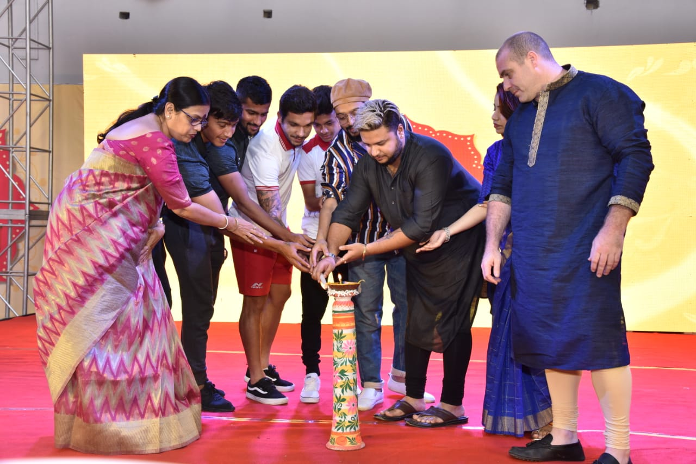
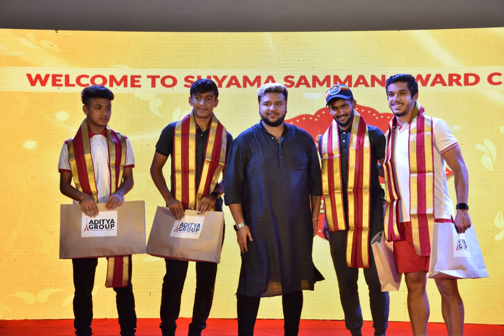
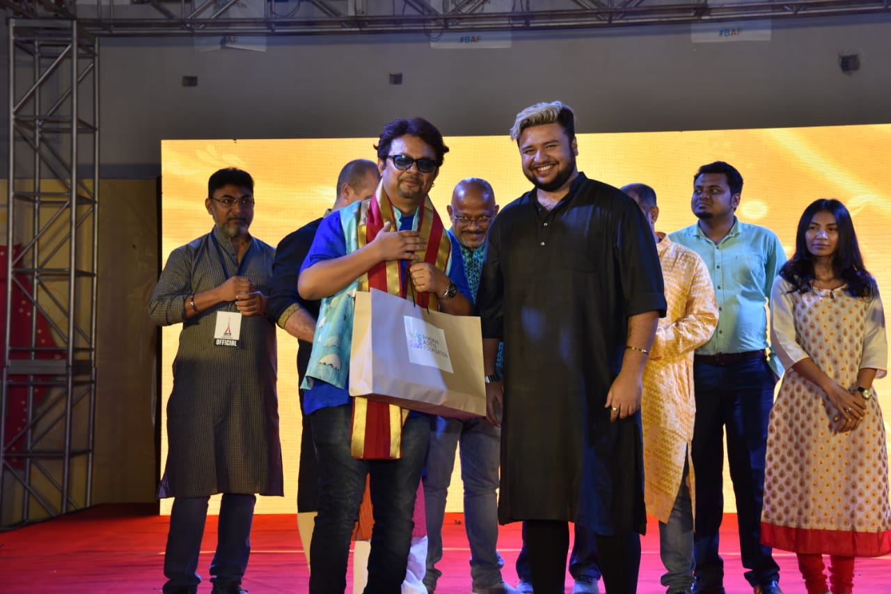
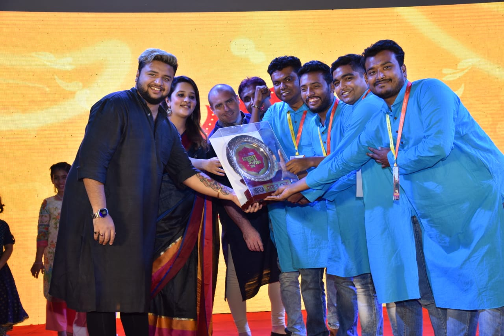

Posted at Date: November 18, 2018
CELEBRATING THE CULTURE OF BENGAL!!!
This year, Aditya Group initiated Shyama Samman 2018, and has rewarded the best Shyama Pujas’ across Barasat, Birati, Basirhat and Madhyamgram areas of West Bengal, on 18th of November 2018, at Aditya School of Sports Arena, Taki road Kadambagachi, Barasat Kolkata 700125. The selected jury members of Aditya Group had visited the participating puja pandals on 5th, 6th and 7th November where the results were declared on 8th of November 2018. The awards and recognition has given these puja committees an opportunity to connect with the audience of the city at an emotional level. As the years are passing by, Shyama Pujas started becoming more culture-conscious and different forms of idols and theme wise representation of puja pandals made an essential place in this occasion. More importantly, it ensured that various forms of art, culture and community celebrations imbibed with religious fervor, all remained intact over the years. The Shyama Samman Awards would help to create an acknowledged platform of expression for all categories of the society during this festive season.s

This year the Serar Sera Award was received by Pragati Sanga , Narayanpur, apart from that all the winners across the above-mentioned categories have been awarded; and also all the nominated pujas’ were felicitated with participating certificates. “This gala evening is the most coveted award show that the Puja clubs and committees in the city had been waiting for and which has brought in glory for their neighbourhood and a sense of pride by this felicitation.”- Speaks Anirban Aditya, Chairman, Aditya Group.

Eminent guests like Everton Santos, Komal Thatal, Hitesh Sharma, Jayesh Rane, Sonnal Mishra and Sourav Das has graced this occasion with their presence.

About Aditya Group :
Aditya Group is a business house established in 1984. Over the years the group has had diversified interests from construction to hospitality, to health care and most famously education. Presently Aditya Group’s core business is its management business that is currently managing over a dozen businesses spread across 4 countries with over 1,000 staff on our books. We offer anything from managing a company’s sales or marketing campaign to fully comprehensive management Service. Aditya Group is most famous for education though, since 1994 Aditya Group’s founder, the late Mr. Bhaskar Aditya started his philanthropic journey into the education sector and set up the Dum Dum Education Society, a nonprofit organization that Mr. Bhaskar originally funded with the proceeds from the groups other businesses, a legacy that the next generation of the Aditya family Mr. Anirban Aditya and Mr. Ankit Aditya are still following to this very day. This has truly been a remarkable journey and hundreds of thousands of kids have benefited from the overwhelming generosity over the years. Ambition and motivation have always been the two things that have fuelled the group and today it is no different. With plans for expansion in every sector of the group, we are on course to grow again significantly over the next 2-3 years.
